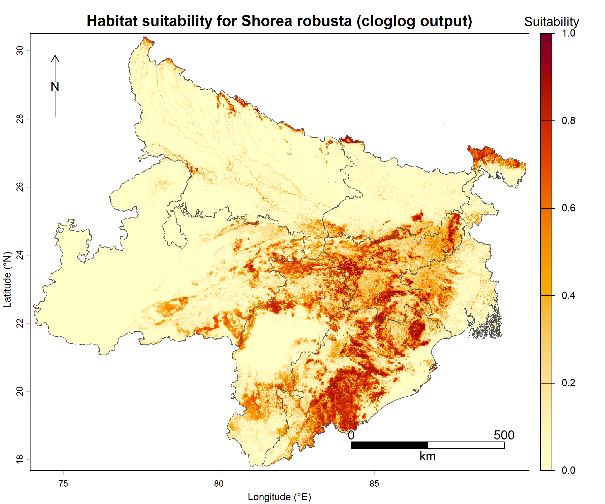
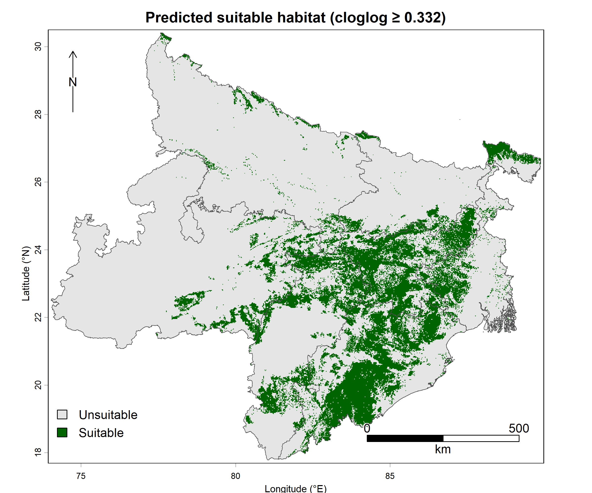

Occurrence preparation
Clean 3,204 records, remove duplicate coordinates, restrict to the seven states and thin to one record per 1 km cell.
A MaxEnt species distribution model for Shorea robusta, exploring how climate, terrain and vegetation relate to predicted habitat suitability across seven Indian states.
Sal (Shorea robusta) is an ecologically and economically important forest tree across South Asia. This project uses presence records and environmental data to estimate relative habitat suitability within a defined seven-state study area.
The analysis combines species occurrences with bioclimatic, topographic and vegetation layers, then uses MaxEnt to model environmental associations and map predicted suitability.
The MaxEnt output uses the cloglog scale. Warmer colours in the model visualisation indicate higher predicted suitability; the surface represents relative suitability, not confirmed species occupancy.

Slope and NDVI together account for 59.2% of the model's reported percent contribution. Temperature range and dry-quarter rainfall add further explanatory contribution.
The report estimates this area as suitable at the 10-percentile training-presence threshold (cloglog 0.332).
| State | Suitable area | State share |
|---|---|---|
| Odisha | 74,754 km² | 48.0% |
| Jharkhand | 49,452 km² | 61.8% |
| Chhattisgarh | 37,581 km² | 27.8% |
| Madhya Pradesh | 20,896 km² | 6.8% |
| West Bengal | 19,980 km² | 23.4% |
| Uttar Pradesh | 8,722 km² | 3.6% |
| Bihar | 7,821 km² | 8.3% |
Areas are model-derived estimates at the selected threshold, not ground-truthed habitat inventories.
The binary map classifies cells at or above the 0.332 cloglog threshold as suitable. The continuous surface remains the more informative representation of model output.

The workflow was assembled in R, with spatial preparation using terra, geodata and sf, and the species distribution model run in MaxEnt 3.4.4.
Clean 3,204 records, remove duplicate coordinates, restrict to the seven states and thin to one record per 1 km cell.
Prepare 19 WorldClim bioclimatic variables, SRTM elevation, derived slope and 2023 Sentinel-2 NDVI.
Use 1,794 training presences, 598 test presences and approximately 10,000 background points.
Review AUC, omission, response curves and jackknife diagnostics; map continuous and thresholded suitability.
19 bioclimatic variables at 30 arc-seconds, representing 1970–2000 climate normals.
Elevation from the Shuttle Radar Topography Mission; slope derived in R.
Mean 2023 NDVI composite built from cloud-masked Sentinel-2 surface reflectance imagery.
The model is a decision-support layer for exploring environmental associations. It should not be read as a census of Sal trees or as proof of presence at any location.
Project files are organised in the repository for review and reuse.